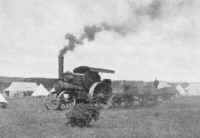
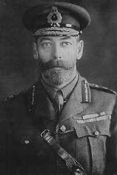
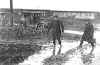

On October 18, they get ready for the arrival of the
D.A.C.'s horses. The next day, after the day's
training, three hundred men march in the rain to Amesbury station, nine miles
to the south-east, to collect the horses.
 On
October 20, early in the morning, more than six hundred horses arrive at the camp, in very poor condition.
Five officers and a hundred and eighteen soldiers also arrive
to complete the D.A.C. unit. They travelled with the horses
on the S.S. Montezuma. The wagons were left in
the warehouse at the port of Quebec for lack of room on board. The following
days are devoted to training the soldiers and
caring for the horses.
On Sunday, October 25, an optional
divine service is offered. So it is every Sunday
after that, when the weather allows.
Attendance is large. The
next day, exercises with the horses begin
gently. The equipment and wagons
arrive gradually each day from Amesbury by truck (mechanical
transport).
 NOVEMBER
On
November 4, King George V and Queen Mary review
the Canadian troops. Luckily the weather is fine that
day, for all the previous week the soldiers had to
drill in endless rain for the ceremonial
parade before the sovereigns. The rain turns
all the roads to mud and prevents the transport of
the equipment the unit is still missing (harnesses and
blankets for the horses, wheels for the wagons,
floors for the tents, etc...). The rain starts again the
day after the royal visit.
On November 9, the camp receives equipment
to provide hot soup to the troops at all
hours. Fresh meat also arrives. The men
continue their riding exercises and their courses on
horse care and manoeuvres. But saddles are still missing,
along with lots of other materiel. What does arrive is
not always suitable and has to be sent back, like the wagon
wheels that do not fit the wagons already supplied. In
any case, the troop has so far received only three of the
hundred or so wagons it is waiting for.
November 15, the first night of frost. It continues the following nights. The men find the water
frozen in the pipes in the morning, but they are not cold and
"they prefer the cold to the rain". Note
that this comment is even underlined
in the unit diary. Yet the non-commissioned officer in charge of the
diary is not supposed to make any subjective comments, only
facts. This small outburst shows clearly how fed up
the soldiers were with the rain and their living conditions. The equipment keeps
arriving, and the
exercises and courses go on too. Training
now continues at battalion level. Courses
in map reading and signalling are added. It often rains, and
some days the weather is too bad for the men
to drill. They use the time to wash their clothes
and the harnesses, and to dress the leather, boots included.
On November 27, a big parade is held in the morning on the
Bustard road. The General compliments the troops
on their good bearing. The troops and the animals have a good
meal at noon, then the D.A.C. returns to its camp.
DECEMBER
Training intensifies.
It now takes place at brigade level. The unit runs simulations, deploying in the
surrounding villages and interacting with other units. The D.A.C. is a unit whose
role is to bring to the front all the equipment the soldiers
need in order to fight: weapons, ammunition,
food rations, fodder for the horses, etc.... The men
run tests to find the best way to load the wagons,
so as to carry as
much materiel as possible. The signallers practise
relaying messages during these battle simulations.
On December 11, for the first
time, the whole First Canadian Division exercises in
formation.
On December 17, the morning news is that
German cruisers have shelled two English coastal
towns. The non-commissioned officer deplores it in the unit
diary, but also sees it as a spur to the recruiting of
volunteers for the British army.
That evening a big storm begins; rain and strong
winds blow for two days. But according to the diary, the
D.A.C. troops are in excellent shape. Discipline
is improving; the men rarely forget to salute the
officers. The offence of "absence without leave"
is decreasing.
On December 21, Christmas leave begins.
Officers and men are entitled to free train travel, a kindness
much appreciated by all. These leaves are very short and
taken in turn. Everyone chooses his own destination,
but many go to visit London.
On December 22, Colonel Williams comes back from the
front and gives a lecture to the officers. He passes on
information about transport, supplies,
tactics for taking cover from flying machines,
artillery cover, etc... He states that the British
army is doing good work at the front and that its weapons are
superior to the enemy's.
A warrant officer asks him whether "supplies arriving
by motor transport go right up to the firing line?"
The Colonel's answer is NO. All materiel going to the front
is carried by horse.
On December 25, "Today is Christmas
Day 1914, and all of Europe and the British Empire are at
war. Man does not improve. Christmas 1814 saw Napoleon's sun
setting on the island of Elba, and it was thought that a lasting
peace was in sight. That thought ended in March 1815,
when Napoleon returned to France. Waterloo 1815 was
considered the end of all war. But the nature of
man does not change, and through the 19th century, and
now in the 20th, he is still the same animal."
(complete extract from the D.A.C. unit diary)
 On December 26, it is reported that enemy aircraft
have dropped a bomb on Dover. Local orders
are to watch the horse picket lines and
report quickly to an officer if an aircraft is seen or heard.
In case of attack, the order is to untie the horses quickly
so that they are not bombed. That day a heavy rain
begins which, combined with strong winds, will last a
week. It is very hard on the horses, which have no
shelter. Everyone is wading in mud.
On December 30, the weather is so bad that
everyone is ordered to stay in camp. The next day, the officers
meet to plan a new camp.
|
 THE
HORSES THE
HORSES
Reading
the war diaries covering the stay in England, one is
struck by how important
horses were to the army.
Almost every day the non-commissioned officer in charge of the diary
notes the size of the "force", which
invariably includes the number of officers, men, horses and
wagons. The horses are inspected regularly
by an officer in charge. A veterinary
unit accompanies the Canadian contingent.
The condition of the horses is also often commented on, and the
death of each one is recorded and its cause noted. The diary
deplores the fact that the horses are tied to pickets
outdoors, in the rain and wind. Blankets
are put on every night, and in the day if
necessary, but the horses' condition worsens
even though their fodder is plentiful and of good quality.
During one of the December storms, the non-commissioned officer
laments in the unit diary that "waterproof
blankets to protect the horses
do not exist".
In fact, horses played an
essential role in the war. Without them, no transport of
troops or materiel was possible. And they shared
the soldiers' fate on the
battlefield: poison gas, shell splinters, stress, etc... |

|